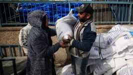
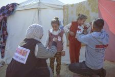

UNRWA
 According to Wikipedia, UNRWA is the United Nations Relief and Works Agency for Palestine Refugees in the Near East is a UN agency that supports the relief and human development of Palestinian refugees. It was created to address the needs of Palestinian refugees who were displaced due to the 1948 Palestinian-Israeli conflict and subsequent conflicts. UNRWA's services include: education, healthcare, relief and social services, infrastructure and camp improvement, microfinance, and emergency assitance. You can donate to UNRWA here: https://donate.unrwa.org/int/en/general
MECA
 According to their website, the Middle East Children’s Alliance (MECA) works to protect the rights and improve the lives of children in the Middle East through aid, empowerment and education. In the Middle East, MECA provides humanitarian aid, partners with community organizations to run projects for children, and supports income-generation projects. In the US and internationally, MECA raises awareness about the lives of children in the region and encourages meaningful action. They offer financial support and professional assistance to community organizations in the West Bank and Gaza that help meet Palestinian children’s needs. These include clinics, kindergartens, counseling centers, libraries; accessible parks and playgrounds; sports teams, and dance, music and art programs. You can donate to MECA here: https://donate.meca.org/int/en/general
SNS Awareness
Another way to help support Palestinians is by reposting on your Instagram story to help spread awareness. Here are some accounts you should take a look at:
- @eye.on.palestine
- @letstalkpalestine
- @aljazeera
- @gazafreedomflotilla